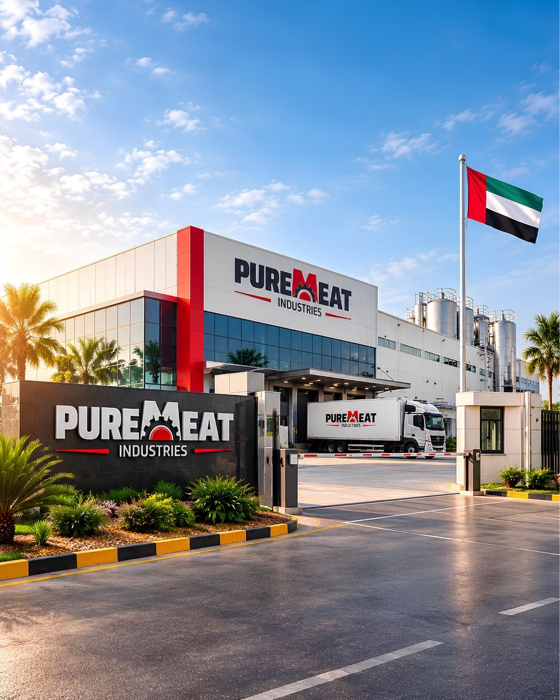

الرؤية
أن نتربّع على عرش الريادة الإقليمية والمحلية، بوصفنا الشريك الصناعي الأول والأكثر موثوقية في توريد وتجهيز مشتقات الذبائح ومنتجات اللحوم المعالجة، بأعلى معايير النقاوة والأمان.
صرحٌ صناعي رائد في قلب أبوظبي
في قلب إمارة أبوظبي، ومن مصفح، تقف شركة بيور ميت للصناعات صرحًا صناعيًا استراتيجيًا رائدًا، تخصّص في تجهيز ومعالجة مشتقات الذبائح بدقة متناهية واحترافية عالية، عبر منظومة تشغيلية ذكية ومبتكرة.
نحن لا نقدّم منتجات غذائية فحسب، بل نبني جسورًا من الثقة؛ فنطبّق أرقى قواعد السلامة الغذائية المعتمدة دوليًا، متكاملةً مع توجيهات الجهات التنظيمية والرقابية في دولة الإمارات العربية المتحدة وإشرافها.
وبهذا نلبّي تطلعات السوق المحلي والإقليمي بأعلى معايير الموثوقية والنقاء، ونكون الشريك الذي تطمئن إليه مطابخ الفنادق وشركات التموين والأسواق المركزية.

أن نتربّع على عرش الريادة الإقليمية والمحلية، بوصفنا الشريك الصناعي الأول والأكثر موثوقية في توريد وتجهيز مشتقات الذبائح ومنتجات اللحوم المعالجة، بأعلى معايير النقاوة والأمان.
الالتزام بتقديم منتجات غذائية فائقة النظافة، تخضع لأدق نقاط التحكم الحرجة (CCPs)، بما يدعم قطاعي الأمن الغذائي والضيافة بأعلى معايير الجودة المستدامة.
صحة المستهلك أولويتنا المطلقة؛ نلتزم التزامًا تامًا بتطبيق الاشتراطات الصحية بكل دقة.
نواكب أحدث الآلات والمعدات الأوتوماتيكية المتطورة في قطاع الأغذية، ونسخّرها لخدمة الجودة والكفاءة.
نسعى باستمرار إلى تحقيق صفاء ونقاء بصري ومجهري في كل منتج نهائي.
نعمل جنبًا إلى جنب مع اللوائح البيئية والصحية، لضمان عمليات مستدامة ونظيفة.
نعمل بالتنسيق التام مع هيئة أبوظبي للزراعة والسلامة الغذائية وهيئة البيئة – أبوظبي، ونلتزم بالاشتراطات الفنية الصادرة عنهما لضمان بيئة صناعية مستدامة وآمنة.